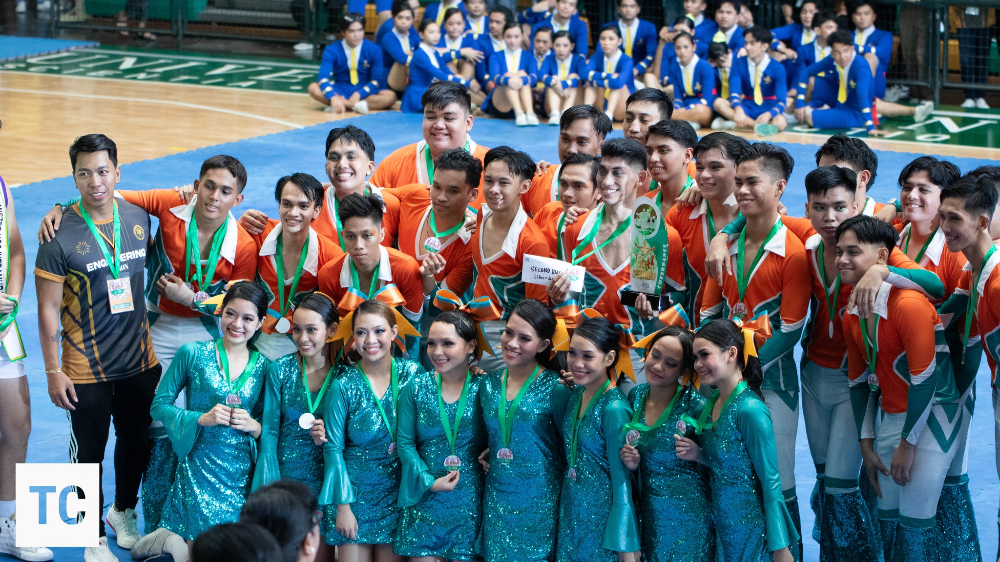

About Us
The Engineering Cheerdance Organization (ECHO) is the official cheerdance group of the University of San Carlos - Talamban Campus, representing the engineering students.
VISION
To be a leading university cheer organization known for producing dynamic, disciplined, and academically excellent individuals who embody leadership, creativity, and unity—empowering every member to shine on and off the mats.
MISSION
ECHO is a platform for aspiring and talented cheerleaders, promoting excellence in cheerdance through teamwork, discipline, sportsmanship, and academic growth. We develop well-rounded individuals who proudly represent the university in both athletics and academics.
ECHO HEAD OFFICERS
2023-2024
Coach: Genesis del Mundo
Captain: Nichole Clark Padilla
Co-Captain: Rafael Dela Torre

2024-2025
Coaches: Latisha Vicente, Ken Quimbong, Agnes Igot
Captain: Mark Antipuesto
Co-Captains: Andre Cespedes, Joshua Llido
2025-2026
Captain: Kayla Millicent Plazo
Vice Captain (Internal): Catherine Zreai Pepito
Vice Captain (External): Clark Daniel Villacampa
Faculty Adviser: Rexane T. Amoin